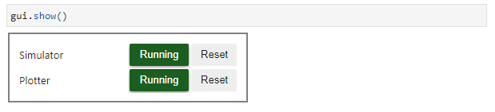
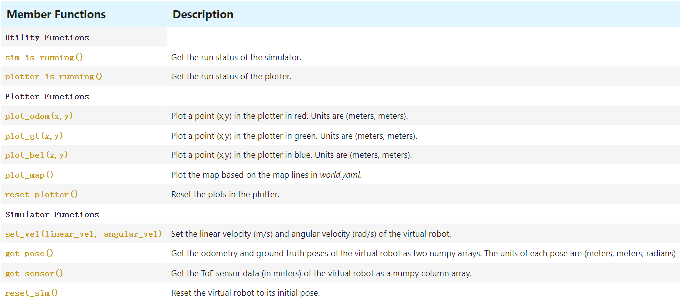
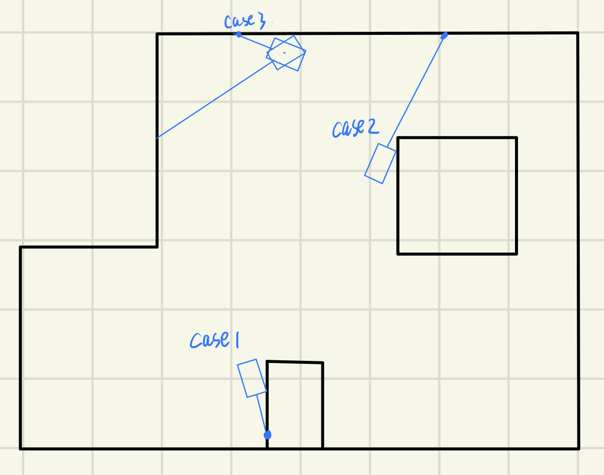

Simulator Features and Functionalities
Simulator and Plotter
Simulator is used to control the robot, while the Plotter shows the localization and trajectory. We can use a GUI to start and track the running status of the simulator and plotter.

Once click the "Reset" button, the robot will go back to the [0,0,0] pose and the plotter will clear the previous trajectories. We can also use following functions to do the same.START_SIM() # Start the simulator
START_PLOTTER() # Start the plotter
STOP_SIM() # Stop the simulator
STOP_PLOTTER() # Stop the plotter
RESET_SIM() # Reset the simulator
RESET_PLOTTER() # Start the plotter
Interactions
In the simulator, we can use mouse and keyboard to send commands. Pressing the up and down arrow keys can increase and decrease the linear velocity of the virtual robot respectively, while left and right arrow keys are used for changing angular velocity. When angular velocity is positive, the virtual robot will rotate clockwise. By hitting spacebar, the robot will stop immediately. The j/j/k/l keys are used to move the simulator view. To zoom in/out, we can scroll the mouse wheel.
In the plotter, we can press the bottons to show or hide the odometry, ground truth, belief, map and distributions. Press the "A" button (bottom-left to the plotting box and above "Plotted Points"), the plot will auto-fit to window.Commander Class
The Commander class allows to interact with the simulator and the plotter programmatically. Here are the functions.

Open Loop Control
Task: Make the robot follow a set of velocity commands to execute a “square” loop anywhere in the map.
I usedcmdr.set_vel(linear_vel, angular_vel) to control the movement of the virtual robot.
The robot will go forward at the speed of 0.5 m/s for one second,
and then set the angular velocity to be 0.5*pi rad/s and last for anoter one second.
Repeat the above movements for four times, we can get a square in theory.
I also wrote a function plot_pose() to plot the odemtry and ground truth.


Closed Loop Control
Task: Design a simple controller in your Jupyter notebook to perform a closed-loop obstacle avoidance.
There is a sensor in front of the virtual robot telling the distance to obstacles. As shown in the code below, in the while loop, if the distance is less than 0.5 m, the robot will turn 45 degrees, otherwise, it will go straight at a speed of 1 m/s.
(cmdr.get_sensor()-threshold)*KP), with threshold = 0.5, KP=10.
The distance threshold of the two videos above were same, but we can see that with the P control,
the virtual robot braked more promptly.

Posted by Lanyue Fang on Apr 24, 2022